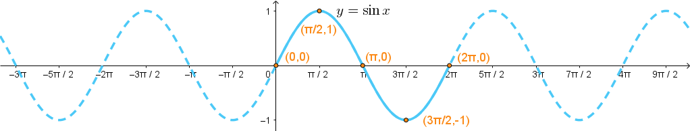
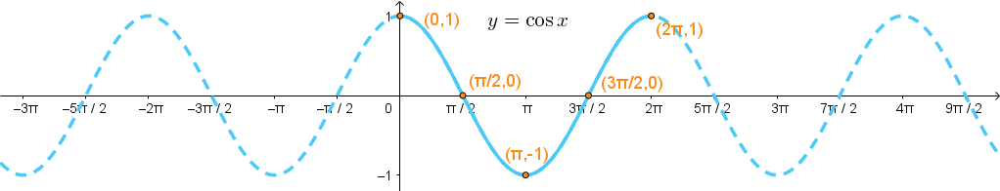

Graphing Trig Functions
Trigonometric Functions
Trigonometric Functions
Up to this point, we have studied the trig functions as ratios of right triangles and as the coordinates of terminal points on the unit circle. Now, we want to consider the trig functions of the form \(y = f(x)\). In previous courses, you should have learned about polynomial functions, rational functions, exponential and logarithmic functions, etc. We want to work with our trig functions in the same way. Remember how to graph \(y = x^2\), \(y = \frac{1}{x}\), or \(y = \ln{x}\)? What would it look like to graph \(y = \sin(x)\) or \(y = \sec{x}\)?
Let's start by seeing how we can map the values of \(\sin(\theta)\) and \(\cos(\theta)\) from the unit circle onto the \(xy\)-plane.
In the video demonstration above, only the part of the graphs of \(y = \sin{x}\) and \(y = \cos{x}\) for \(0 \le x \le 2\pi\) are shown (also illustrated below). These graphs of length \(2\pi\) represent a single period of each graph, corresponding to a single revolution about the unit circle. But since the amount of rotation is unrestricted, meaning we can rotate forever in both the positive (counterclockwise) and negative (clockwise) directions, the graphs for \(y = \sin{x}\) and \(y = \cos{x}\) should extend forever in both directions along the \(x\)-axis. However, each revolution about the unit circle produces another period of the graph having the same shape. Thus, both graphs have a repetitive wave shape as \(x \rightarrow -\infty\) and \(x \rightarrow +\infty\).
The base 1-period section of the graph of \(y = \sin{x}\) starts by increasing from the origin, reaches it maximum, decreases down through the \(x\)-axis to reach its minimum, and then increases to end at the \(x\)-axis where \(x = 2\pi\). It has a single period length of \(2\pi\). The 5 key points where it crosses the \(x\)-axis or where it reaches a maximum or minimum value are \((0,0)\), \(\left(\frac{\pi}{2},1\right)\), \((\pi,0)\),\(\left(\frac{3\pi}{2},-1\right)\), and \((2\pi,0)\).
The base 1-period section of the graph of \(y = \cos{x}\) starts by decreasing from its maximum, passes through the \(x\)-axis to reach its minimum, then increases up through the \(x\)-axis to end at it maximum where \(x = 2\pi\). It has a single period length of \(2\pi\). The 5 key points where it crosses the \(x\)-axis or where it reaches a maximum or minimum value are \((0,1)\), \(\left(\frac{\pi}{2},0\right)\), \((\pi,-1)\),\(\left(\frac{3\pi}{2},0\right)\), and \((2\pi,1)\).
©2025 M4thG33x (new window) Some Rights Reserved.